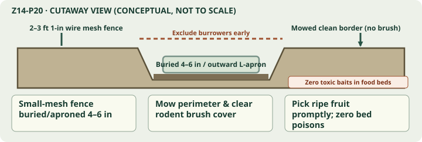

Z14-P20 · Food production and preservation · New manuscript
Exclude rabbits, deer, rodents, and pests cleanly before crops mature
Prevent overnight wipeouts of young seedlings and stored produce through physical fencing and wildlife-safe sanitation.
When it applies · Suburban and rural gardens facing rabbits, woodchucks, deer, squirrels, and voles.
Equipment · Galvanized wire mesh fencing (1-inch hex/hardware cloth for rabbits), sturdy stakes, and clean perimeter mowing.

Actions
- Install physical fencing BEFORE seedlings sprout—a 2-to-3-foot small-mesh fence buried 4 to 6 inches into the ground (or bent outward as an L-apron) blocks burrowing rabbits and woodchucks far more reliably than scent repellents that wash off in rain.[P03]
- Keep grass trimmed short around garden edges and remove brush piles or stacked boards right beside beds to eliminate hiding cover for voles, mice, and slugs.[P03]
- Harvest ripe tomatoes, berries, and squash promptly and pick up fallen rotting fruit daily so food odors do not train raccoons, rodents, or bears to raid home yards.[P04, E27]
Failure recognition · Spending two months nursing tender bush beans and cabbages with zero wire fence until rabbits eat every stem down to the dirt in one night.[P03]
Verify · Confirm mesh openings small enough for young rabbits, lower fence edge anchored/buried cleanly, and perimeter brush kept mowed.[P03]
Stop or change course · Never scatter open toxic rodent baits in or around edible vegetable beds where pets, children, wildlife, or produce soil can contact poison.[P03, M15]
Evidence and editorial notes
- E27 · USDA Forest Service · Responsible Recreation (current web edition)
- Section: Responsible Recreation > Preparedness and Wildlife Safety · Conditions: Backcountry camps in bear and wildlife country
Support: Store food, scented items, and cooking gear separately from sleeping shelters according to local land-agency rules to prevent wildlife intrusions into sleeping areas.
Limitations: Required storage method (bear canister, locker, hang) varies by jurisdiction. · Conflicting evidence: None; keeps cooking and food odors separate from shelter enclosures.
Editorial note: Connects camp layout, odor separation, and shelter safety. · Specialist reviewer: Land management and wildlife safety
Primary source · checked 2026-11-24 - M15 · National Capital Poison Center · First Aid for Poisonings (Current web edition)
- Section: First aid for swallowed, inhaled, skin and eye exposure; when to call 911 · Conditions: Suspected poisoning in the U.S.
Support: For collapse, seizure, breathing trouble or inability to wake call 911. Otherwise get timely poison-center advice. Do not induce vomiting.
Limitations: Substance and route determine immediate care. Keep rescuers away from contaminated scenes. · Conflicting evidence: See A02 claim audit for boundaries.
Editorial note: Separates 911 life-threat activation from Poison Control guidance. · Specialist reviewer: Medical toxicology and poison control
Primary source · checked 2026-11-25 - P03 · University of Minnesota Extension · Planting the Vegetable Garden (current web edition)
- Section: Watering, Mulching, Crop Rotation, and Integrated Pest Management · Conditions: Home vegetable plots across seasonal dry/wet swings
Support: Water deeply at the soil base rather than overhead foliage to conserve moisture and curb fungal disease, mulch soil to stabilize temperature and weeds, rotate plant families across seasons, and identify pests before choosing least-toxic controls.
Limitations: Untreated rainwater or suspect surface water should not be splashed onto ready-to-eat leafy crops immediately before harvest. · Conflicting evidence: None; aligns with FSG-4 clean produce handling.
Editorial note: Grounds resilient low-input gardening and biological pest management. · Specialist reviewer: Extension horticulture and integrated pest management
Primary source · checked 2026-11-24 - P04 · University of Minnesota Extension · Harvesting and Storing Home Garden Vegetables (current web edition)
- Section: Harvesting Maturity, Curing, and Post-Harvest Handling · Conditions: Home garden root crops, winter squash, onions, potatoes, and greens
Support: Harvest crops at proper maturity during cool morning hours without bruising, cure storage crops (onions, garlic, winter squash, potatoes) at crop-specific warm/dry conditions before cold storage, and cull any nicked or diseased items for immediate use.
Limitations: A single bruised or rotting vegetable spreads decay rapidly across an entire storage bin. · Conflicting evidence: None; explains why curing precedes long cold storage.
Editorial note: Anchors harvest-to-storage quality gates in Z14. · Specialist reviewer: Post-harvest horticulture specialist
Primary source · checked 2026-11-24
Source lineage · UMN Extension Vegetable Crop Management; new manuscript · Classification · New manuscript.